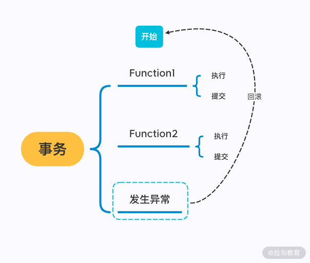

- 00 开篇词：选择 ZooKeeper，一步到位掌握分布式开发.md.html
- 01 ZooKeeper 数据模型：节点的特性与应用.md.html
- 02 发布订阅模式：如何使用 Watch 机制实现分布式通知.md.html
- 03 ACL 权限控制：如何避免未经授权的访问？.md.html
- 04 ZooKeeper 如何进行序列化？.md.html
- 05 深入分析 Jute 的底层实现原理.md.html
- 06 ZooKeeper 的网络通信协议详解.md.html
- 07 单机模式：服务器如何从初始化到对外提供服务？.md.html
- 08 集群模式：服务器如何从初始化到对外提供服务？.md.html
- 09 创建会话：避开日常开发的那些“坑”.md.html
- 10 ClientCnxn：客户端核心工作类工作原理解析.md.html
- 11 分桶策略：如何实现高效的会话管理？.md.html
- 12 服务端是如何处理一次会话请求的？.md.html
- 13 Curator：如何降低 ZooKeeper 使用的复杂性？.md.html
- 14 Leader 选举：如何保证分布式数据的一致性？.md.html
- 15 ZooKeeper 究竟是怎么选中 Leader 的？.md.html
- 16 ZooKeeper 集群中 Leader 与 Follower 的数据同步策略.md.html
- 17 集群中 Leader 的作用：事务的请求处理与调度分析.md.html
- 18 集群中 Follow 的作用：非事务请求的处理与 Leader 的选举分析.md.html
- 19 Observer 的作用与 Follow 有哪些不同？.md.html
- 20 一个运行中的 ZooKeeper 服务会产生哪些数据和文件？.md.html
- 21 ZooKeeper 分布式锁：实现和原理解析.md.html
- 22 基于 ZooKeeper 命名服务的应用：分布式 ID 生成器.md.html
- 23 使用 ZooKeeper 实现负载均衡服务器功能.md.html
- 24 ZooKeeper 在 Kafka 和 Dubbo 中的工业级实现案例分析.md.html
- 25 如何搭建一个高可用的 ZooKeeper 生产环境？.md.html
- 26 JConsole 与四字母命令：如何监控服务器上 ZooKeeper 的运行状态？.md.html
- 27 crontab 与 PurgeTxnLog：线上系统日志清理的最佳时间和方式.md.html
- 28 彻底掌握二阶段提交三阶段提交算法原理.md.html
- 29 ZAB 协议算法：崩溃恢复和消息广播.md.html
- 30 ZAB 与 Paxos 算法的联系与区别.md.html
- 31 ZooKeeper 中二阶段提交算法的实现分析.md.html
- 32 ZooKeeper 数据存储底层实现解析.md.html
- 33 结束语 分布技术发展与 ZooKeeper 应用前景.md.html
- 捐赠
31 ZooKeeper 中二阶段提交算法的实现分析
前几节课中，我们一直围绕在分布式系统环境下，如何解决一致性问题来进行讨论，并分别介绍了在分布式环境中比较常见的二阶段提交、三阶段提交算法，之后又对比介绍了 ZooKeeper 所采用的 ZAB 协议算法和 Paxos 算法的优缺点。
在学习 ZAB 协议和 Paxos 算法的过程中，我们曾提到在处理来自客户端的事务性请求时，为了保证整个集群的数据一致性，其各自的底层实现与二阶段算法都有相似之处。但我们知道，二阶段提交算法自身有一些缺点，比如容易发生单点故障，比如在并发性能上有一些瓶颈，那么今天就深入 ZooKeeper 的底层，来看一下 ZooKeeper 是如何克服这些问题，并实现自己特有的二阶段提交算法的。希望通过本节课的学习，帮助你进一步提高解决分布式一致性问题的能力。
提交请求
前面我们学到，二阶段提交的本质是协调和处理 ZooKeeper 集群中的服务器，使它们在处理事务性会话请求的过程中能保证数据一致性。如果把执行在 ZooKeeper 集群中各个服务器上的事务会话处理操作分别看作不同的函数，那么整个一致性的处理逻辑就相当于包裹这些函数的事务。而在单机环境中处理事务的逻辑是，包含在事务中的所有函数要么全部成功执行，要么全部都不执行。

不同的是，在分布式环境中，处理事务请求的各个函数是分布在不同的网络服务器上的线程，无法像在单机环境下一样，做到当事务中的某一个环节发生异常的时候，回滚包裹在整个事务中的操作。因此，分布式环境中处理事务操作的时候，一般的算法不会要求全部集群中的机器都成功执行操作，如果有其中一个函数执行异常，那么整个事务就会把所有函数的执行结果回滚到执行前的状态，也就是无论是正确执行的函数，还是执行异常的函数，各自所做的对数据和程序状态的变更都将被删除。
执行请求
看完提交请求的处理过程后，我们再来看一下在执行请求时 ZooKeeper 的底层实现过程。
ZooKeeper 集群中的 Leader 服务器对该条事务性会话操作是否能够在 Follow 服务器上执行，向集群中的 Follow 服务器发起 Proposal 请求。
这里请你注意，与我们之前介绍的二阶段提交不同的是，在 ZooKeeper 的实现中并没有中断提交的逻辑。集群中的 Follow 服务器在接收到上述 Proposal 请求后，只有两种处理情况：
第一种情况：ZooKeeper 集群中的 Follow 服务器能够正确执行操作，并向 ZooKeeper 集群中的 Leader 反馈执行结果。
第二种情况：无法正确执行该条 Proposal 操作，直接抛弃该条请求。
ZooKeeper 集群的这种执行逻辑，最终导致无须等 待所有服务器都执行完成并反馈，集群中的 Leader 服务器只需要接收到集群中过半数的 Follow 服务器成功执行的反馈信息， ZooKeeper 集群中的 Leader 服务器最终会统计 Follow 服务器反馈的信息，当超过半数以上服务器可以正确执行操作后，整个 ZooKeeper 集群就可以进入执行事务提交操作。
底层实现
介绍完 ZooKeeper 实现二阶段提交算法的原理后，接下来我们深入代码层面看看 ZooKeeper 是如何设计架构的。
从源码层面来讲，ZooKeeper 在实现整个二阶段提交算法的过程中，可以分为 Leader 服务器端的发起 Proposal 操作和 Follow 服务器端的执行反馈操作。
我们先来看看，在 ZooKeeper 集群中的 Leader 是如何向其他 Follow 服务器发送 Proposal 请求的呢？
如下面的代码所示， ZooKeeper 通过 SendAckRequestProcessor 类发送 Proposal 来提交请求。这个类首先继承了 RequestProcessor 类，但是它不是处理来自客户端的请求信息，而是用来处理向 Follow 服务器发送的 Proposal 请求信息。它在内部通过 processRequest 函数来判断，责任链中传递请求操作是否是数据同步操作：如果判断是 OpCode.sync 操作（也就是数据同步操作），就通过 learner.writePacket 方法把 Proposal 请求向集群中的所有 Follow 服务器进行发送。
public class SendAckRequestProcessor implements RequestProcessor, Flushable {
public void processRequest(Request si) {
if(si.type != OpCode.sync){
QuorumPacket qp = new QuorumPacket(Leader.ACK, si.getHdr().getZxid(), null,
null);
try {
learner.writePacket(qp, false);
} catch (IOException e) {
LOG.warn("Closing connection to leader, exception during packet send", e);
try {
if (!learner.sock.isClosed()) {
learner.sock.close();
}
} catch (IOException e1) {
// Nothing to do, we are shutting things down, so an exception here is irrelevant
LOG.debug("Ignoring error closing the connection", e1);
}
}
}
}
}
在介绍完 ZooKeeper 集群中的 Leader 服务器发送 Proposal 的底层实现过程后，接下来我们再来学习一下 Follow 服务端在接收到 Leader 服务器发送的 Proposal 后的整个处理逻辑。
如下面的代码所示，这在 Follow 服务器端是通过 ProposalRequestProcessor 来完成处理的。ProposalRequestProcessor 构造函数中首先初始化了 Leader 服务器、下一个请求处理器，以及负责反馈执行结果给 Leader 服务器的 AckRequestProcessor 处理器。
public ProposalRequestProcessor(LeaderZooKeeperServer zks,
RequestProcessor nextProcessor) {
this.zks = zks;
this.nextProcessor = nextProcessor;
AckRequestProcessor ackProcessor = new AckRequestProcessor(zks.getLeader());
syncProcessor = new SyncRequestProcessor(zks, ackProcessor);
}
接下来，我们进入到 AckRequestProcessor 函数的内部，来看一下 Follow 服务器是如何反馈处理结果给 Leader 服务器的。
如下面的代码所示， AckRequestProcessor 类同样也继承了 RequestProcessor，从中可以看出在 ZooKeeper 中处理 Leader 服务器的 Proposal 时，是将该 Proposal 请求当作网络中的一条会话请求来处理的。整个处理的逻辑实现也是按照处理链模式设计实现的，在 AckRequestProcessor 类的内部通过 processRequest 函数，来向集群中的 Leader 服务器发送 ack 反馈信息。
class AckRequestProcessor implements RequestProcessor {
public void processRequest(Request request) {
QuorumPeer self = leader.self;
if(self != null)
leader.processAck(self.getId(), request.zxid, null);
else
LOG.error("Null QuorumPeer");
}}
总结
本节课我们主要介绍了，二阶段提交算法在 ZooKeeper 中的应用，并深入底层分析了 ZooKeeper 实现二阶段提交的具体过程。虽然二阶段提交自身有一些问题，不过还是一个比较好的解决分布式环境下一致性问题的算法，因此 ZooKeeper 在实现的过程中也借鉴了它，并通过自身的崩溃恢复机制来解决二阶段提交算法中的单点故障等问题。
从前几个课时到现在可以发现，无论是 Paxos 算法还是 ZAB 协议，都在原始的二阶段提交算法的基础上针对自身要解决的问题进行了修改和优化。面对复杂的网络环境，再优秀的算法也不是万能的。我们在学习算法的同时，更应该深入掌握其中的核心原理以及算法设计的目的，以便在日常工作中更好地解决遇到的问题。
这里给大家一道思考题：在二阶段提交算法中，不可缺少的一个环节就是，向集群中的服务器发送提案询问操作，当收到提案操作后，需要集群中的服务器给予反馈，这本质上就是一次客户端和服务器端的会话处理过程。而当会话的超时时间过长，虽然能够保证服务器的响应，但又会降低整个集群的处理性能。可是过短的超时时间，又可能会因为网络延迟或事务处理耗时，导致本可以正常执行的反馈信息并没有发送回提案服务器。那么如果是你，应该如何设置这个会话的超时时间呢？
© 2019 - 2023 Liangliang Lee. Powered by gin and hexo-theme-book.